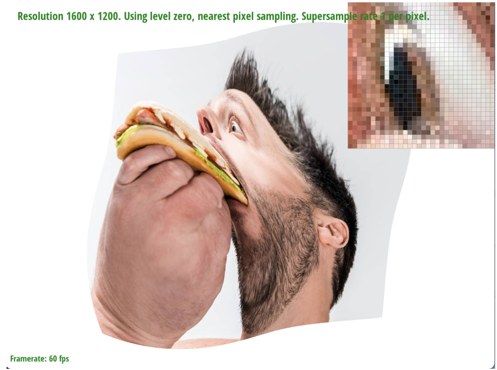

Overview
In this homework, we implemented a triangle rasterization pipeline for drawing svg triangles with colors or complex textures. We implemented several optimizations for antialiasing, including supersampling, pixel sampling, and level sampling. We learned to use barycentric coordinates to interpolate colors and textures across the triangles, and we also learned how to use transformations in 2D. Lastly, we learned several engineering solutions for antialiasing that tradeoff antialiasing power for computational efficiency.
Section I: Rasterization
Part 1: Rasterizing single-color triangles
To rasterize triangles, we first get the bounding box of the triangle by computing the min/max x/y coordinates of the corners. We use the floor function to get the values in pixel coordinates. Then, we compute the winding direction of the triangle by checking if P2 is to the left of the line from P0 to P1. If this is not the case, the triangle is wound clockwise, and we swap P1 and P2 so the resulting triangle is wound counterclockwise.
Then, we iterate through the bounding box in pixel coordinates. For each of these sample pairs (inclusive of both the mins and maxes), we add 0.5 to each of x and y to get the center of the pixel. Then, for each sample point, we perform 3 line tests (is the point on the inside (left) side of each of the three sides of the triangle?). If all 3 of these line tests pass, we set the appropriate part of the sample buffer to the desired color.
This algorithm is no worse than one that checks every point within the bounding box of the triangle because it is that algorithm! It checks every point within the bounding box of the triangle.
Part 2: Antialiasing triangles
The main structural changes we make are as follows:
- Increase the size of the sample buffer to be width x height x sample_rate
- Change fill_pixel to set the desired color for all sample_rate supersamples in the sample_buffer corresponding to the input x and y pixel coordinates
- Change resolve_to_framebuffer to compute the color of a frame buffer pixel as the average color of all the sample_rate supersamples in the sample_buffer corresponding to that pixel
- In rasterize_triangle, we fill each pixel's sample buffer segment with the appropriate supersamples. These supersamples are taken uniformly within the pixel box (with half the space on the edges to match the neighboring pixels). For example, with sample_rate = 9, we have supersamples at (sx + ⅙ + ⅓i, sy + ⅙ + ⅓j) for i, j in {0, 1, 2}. As in the homework spec, sx and sy are the pixel coordinates. Note that when sample_rate = 1, the original algorithm from task 1 is recovered.
Supersampling is useful in that it helps with antialiasing. The averaging process in resolve_to_framebuffer filters out higher frequencies that otherwise would cause jaggies and other artifacts (see below images). Specifically, it helps catch thin edges (high frequency signal) where single sampling might miss or overrepresent the fine detail.
|
|
|
|
With a sample rate of 1, we observe jaggies and holes because the very thin triangle is likely to miss the sparse single sample points. With a sample rate of 4, this issue is slightly improved because the supersamples are more likely to be in the triangle (resulting in lighter colored pixels due to averaging). When you squint your eyes, it does look more like the corner of a triangle. With a sample rate of 16, the holes are gone, and the color better approximates the “average color” of the pixel or the area of the pixel that is covered by the triangle. This looks even better when squinting. In the limit, an infinite sample rate would perfectly capture this “average color”.
Part 3: Transforms
|
|
We were trying to make it look like the cubeman is doing a little dance!
Section II: Sampling
Part 4: Barycentric coordinates
Barycentric coordinates are 1-normalized coordinates that tell you how close a point is to each vertex (relative to the corresponding altitude of the triangle). When the point is coincident with a vertex, the corresponding coordinate is 1 (and the others are 0). In the image below, you can see maximal red (no green or blue) at the red vertex, and the same for the other vertices. As you move from the green vertex toward the red vertex, the amount of green fades and the amount of red increases. Note that the total brightness remains the same over the whole triangle.
|
|

|
Part 5: "Pixel sampling" for texture mapping
Pixel sampling is the process of selecting a value for each pixel of an image. Here, we iterate over each pixel, and determine its barycentric coordinates in the triangle it belongs to. We then use those barycentric coordinates to interpolate the pixel’s texture coordinates (u, v) from the vertex texture coordinates. Lastly, we either select the color of the nearest texel (texture map pixel) to (u, v) or use bilinear interpolation to compute a weighted average of the colors of the 4 nearest texels to (u, v). This gives us a color we can assign to each pixel.

The nearest method results in a jaggy clock hand due to aliasing, because the texel sampling rate is too low as compared to the Nyquist rate in this high frequency region of texture. This is even true with the antialiasing technique of supersampling. Bilinear interpolation helps to filter out high frequencies in the texture map, and results in fewer aliasing artifacts (but a blurrier clock hand). This effect is amplified by supersampling in the bilinear case as well.
As mentioned, we notice the biggest difference between the nearest and bilinear methods when there are high frequencies in the texture map (i.e., fine detail such as the clock hands).
Part 6: "Level sampling" with mipmaps for texture mapping
Level sampling is the process of selecting a mipmap level (texture map resolution) for each pixel in an image. We use this to reduce texture aliasing for pixels that map to multiple texels, while also not overblurring pixels that map to a single texel in the highest resolution texture map. To implement level sampling, we approximate the “size” of the pixel in texels using the formula shown in lecture (D = …). We then select the mipmap level L = log2(D) that blurs just enough to antialias. We then use the desired pixel sampling method to choose the color for the pixel from this texture map level.
Computation cost
- Pixel sampling - LOW; performs an additional interpolation and computation in barycentric coordinates
- Super sampling - HIGH; repeats the entire process for sampling pixels up to 16 times and average those values in groups of 16
- Level sampling - LOW; performs 2 additional barycentric computations for p_x_uv and p_y_uv, then computes the derivatives and the level L
Memory cost
- Pixel sampling - LOW; no additional memory is required
- Super sampling - HIGH; increases the memory requirement by increasing the frame buffer by up to 16x
- Level sampling - MEDIUM; increases the memory by storing additional low resolution versions of the texture map at log2 scale which increases the total memory footprint by 4/3
Antialiasing power
- Pixel sampling has a strong effect toward antialiasing in the experiments in task 5 and 6 of this assignment. This is because we are sampling from high frequency parts of the texture map (in the selected areas, such as the clock hand) and pixel sampling helps to efficiently filter out those high frequencies.
- Super sampling has a similar effect as pixel sampling since it filters out higher frequencies through average nearby pixels similarly to pixel sampling. However, supersampling comes at a much greater compute and memory cost since the number of samples required scale multiplicatively by the amount of super sampling. We find experimentally that we can get similar results to 16x supersampling by using a combination of 4x supersampling and bilinear pixel sampling without any level sampling.
- Level sampling is effective for antialiasing when there is wide variation in the level of texture magnification/minification over the image (e.g., in the warp effect shown below). It minimizes the necessity of additional (expensive) supersampling while not overblurring or overaliasing any part of the image. This is especially notable when looking at the specular highlight in the eye and the eyelashes below.
|

|
|
|
|
|